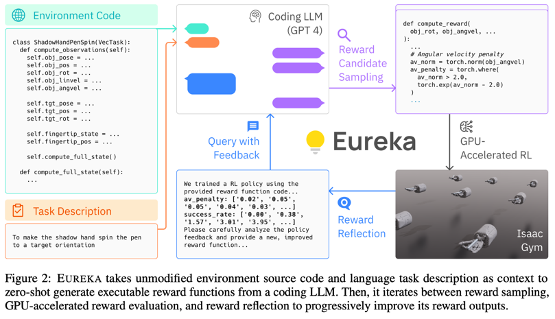
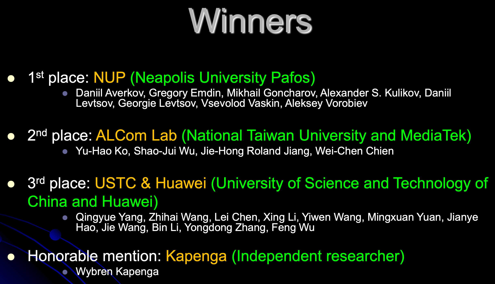

From Engineering to Biology:
Why You Should Master AI
Everybody Has a Brilliant AI Assistant – It Always Ready to Help!
- ✨ Guide your thinking process like a pro
- üîç Quickly search for the most relevant information
- üí° Effortlessly generate insights that spark ideas
We can focus on what truly matters: critical thinking, decision-making and verification
1. Tic-tac-toe with Robot Arm
- General idea
- Implement game with robot arm
- Type
- Engineering / Research / Fun
- Equipment
- Kinova robot arm
- Raspberry Pi / Optitrack cameras
- Outcome
- Robot wins human
CSAI NUP. Kirill Krinkin. Spring 2025.

AI in Robotics
Eureka: Human-Level Reward Design via Coding LLMs (ICLR 2024)
2. Animations in Manim for Solving Geometry Problems
- Develop specialized geometric tools to enhance Manim's capabilities for geometry problems
- Create AI system to automatically generate Manim code from problem descriptions
- Build converter to transform GeoGebra constructions into Manim animations
CSAI NUP. Fedor Baharev. Spring 2025.
3. Cryogenic Electron Microscopy
- Machine Learning in Classification: ML-driven 2D/3D classification using maximum likelihood optimization and PCA for conformational analysis
- Intelligent Particle Detection: CNNs revolutionize automated particle recognition, enhancing accuracy over traditional methods
- Advanced Model Generation: Modern deep learning approaches using VAEs and GANs enable robust initial 3D structure determination
CSAI NUP. Fedor Baharev. Spring 2025.

4. LLM for Generating Astronomy Olympiad Problems

- Current Challenge: Existing LLMs fall short in generating high-quality olympiad problems that match Iternational Olympiad standards
- Research Objectives: Develop specialized datasets and explore novel approaches for training AI models to generate problems
CSAI NUP. Alex Avdiushenko. Spring 2025.
5. Competition on Boolean Circuit Synthesis:
2024 → 2025
CSAI NUP. Alexander S. Kulikov. Spring 2025.